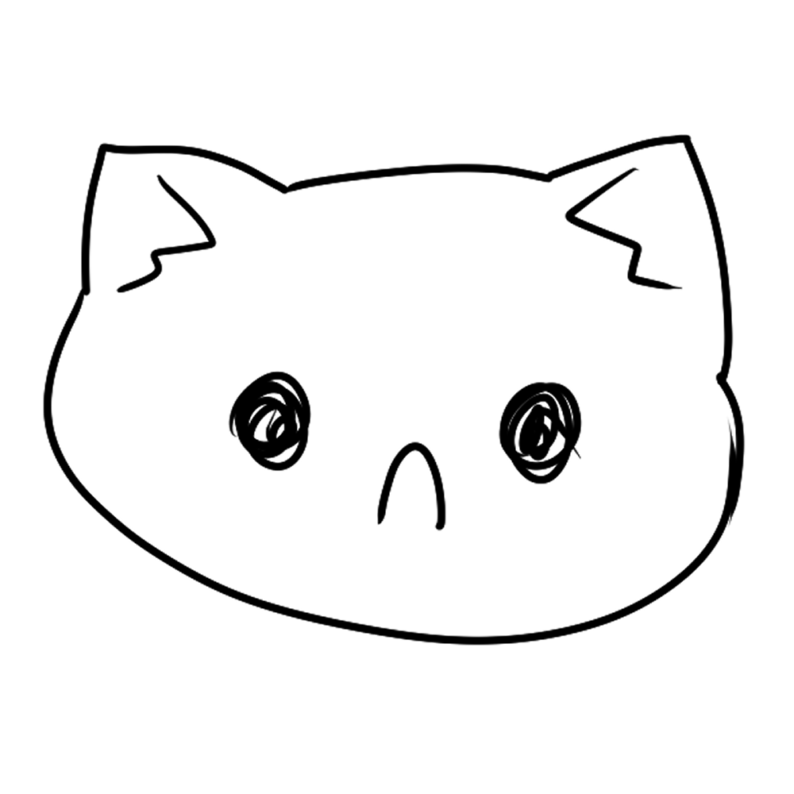

Look at what you've done!
its sad now :(
Sad cats are drawn for no apperent reason. We have no idea what really makes them sad but they are just sad. Its ok to be sad because eventually maybe these cats may stop being drawn sad!
Click here to go back!